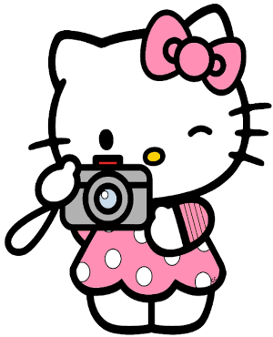

Hello kitty
Também conhecida por seu nome completo Kitty White, é uma personagem criada pela empresa japonesa Sanrio. Apesar do bigode, das orelhas e do nome, Sanrio retrata Hello Kitty como uma jovem gijinka de um Bobtail Japonês com um laço vermelho e, notavelmente, sem boca.
Saiba mais sobre ela no canal Você Sabia?